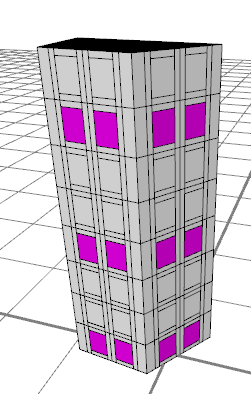

set operation
Synopsis
set(attribute, bool value)
set(attribute, float value)
set(attribute, string value)
Parameters
- attribute (keyword)
Name of shape attribute to set. - value (bool, float or string - same type as attribute)
Value to assign to shape attribute. Note: Not all shape attributes are writable!
The set operation assigns a value to a shape attribute of the current shape. There are two kinds of shape attributes: builtin attributes such as material.color or scope.tx and generic attributes, which are declared as rule attributes (see Attributes).
Related
Examples
Builtin Shape Attributes
| Enable horizontal trim planes |
set(trim.horizontal, true) |
Set x-translation of scope to 0 |
set(scope.tx, 0) |
Set the material color's red component to 0.5 |
set(material.color.r, 0.5) |
Assign the built-in test texture to the colormap channel |
set(material.colormap, "builtin:uvtest.png") |
Generic Shape Attributes
|  |
version "2011.1"
attr floorNumber = -1
const floorHeight = 4
Init-->
extrude(30)
comp(f) {side : Side }
Side-->
split(y) { ~floorHeight: Floor }*
Floor-->
set(floorNumber, split.index)
split(x) { ~1 : Wall | {~3 : Tile}* | ~1 : Wall }
Tile-->
split(x) { 0.5 : Wall | ~1 : MidTile | 0.5 : Wall}
MidTile-->
split(y) { 0.5 : Wall | ~1 : Window | 0.5 : Wall }
Window-->
case floorNumber % 3 == 0:
color(1.0, 0.0, 1.0)
X
else:
X
Store floor index in a generic attribute, floorHeight. The attribute is then used to color the windows on every 3rd floor pinkinsh.
|
Copyright ©2008-2017 Esri R&D Center Zurich. All rights reserved.